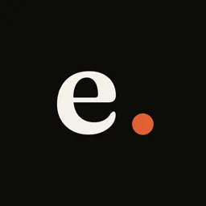
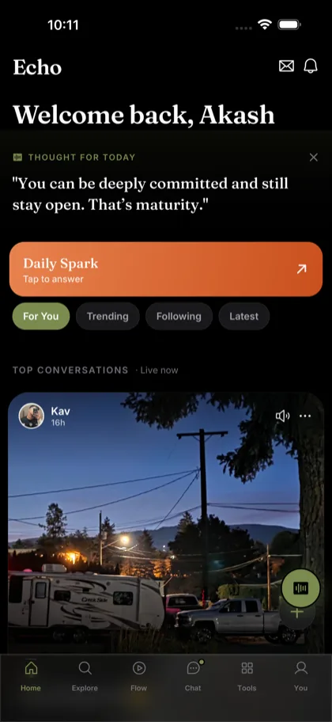
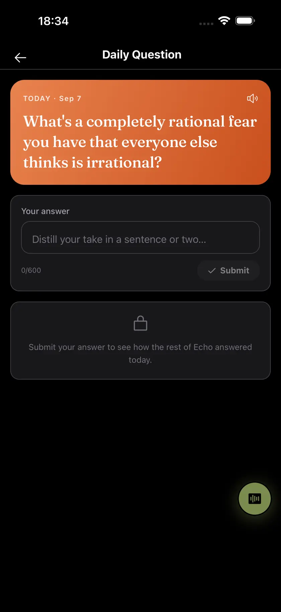
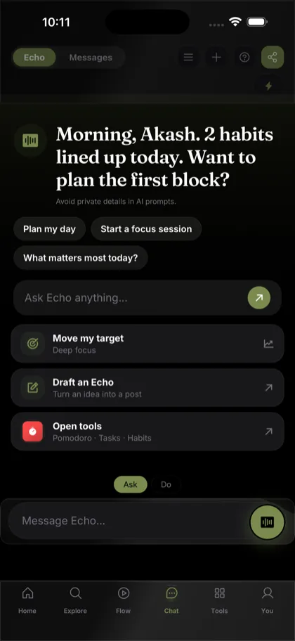
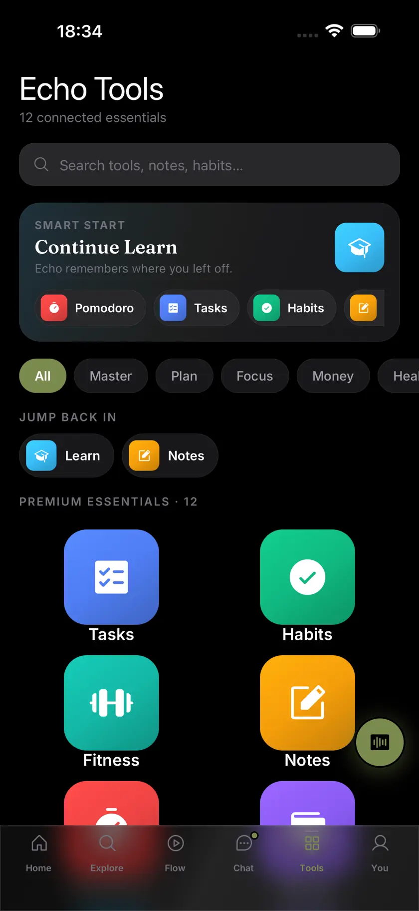

Speak. Echo does the rest.
A voice-first social network with an AI that listens, acts and translates — built for the 500 million Indians whose first language isn't English.
Private beta · Android

Post this thought.
आज मन बहुत हल्का है
Or hold one button and say it. 1.4 seconds.
Writing a full thought in Devanagari or Tamil on a phone is slow enough that most people simply don't. The thought gets shortened, or it never gets posted.
And the apps that do translate usually translate the content while leaving an English interface around it. The product never feels like it was made for you — it feels like a product made for someone else, that you are allowed to use.
So a market of hundreds of millions consumes constantly and posts rarely. The supply side of Indian-language social is thin, and it is thin for a mechanical reason: the keyboard.
Vernacular users are the majority of India's internet and a minority of its posts.
Localisation stops at the post body. Navigation, prompts and layout stay foreign.
The insight
You speak. One recording becomes a transcript, a structured intent and a spoken reply in a single model call.
Echo doesn't dictate into a text box and leave you there. It acts on what you said — posts it, searches it, opens the tool you asked for. Eighteen in-app actions are reachable by voice today.
The same vocabulary is now a choice in the assistant, not a guess it makes for you: Ask and Echo only talks, Do and it can act on 34 tools — with anything that writes pausing for confirmation first.
Hold to talk, in any of 26 languages.
Speech, intent and reply resolve in one round trip — not three chained calls.
The app performs it. Posting, searching, opening a tool, answering back aloud.



The product
01 / 04
The greeting is the reader's name in the reader's language. One Daily Spark, four filters, and a session with a bottom to it.
02 / 04
Answer to unlock the network's answers. It closes — the reason to come back tomorrow is not an infinite scroll.
03 / 04
Ask and Echo only talks. Do and it acts across 34 tools, pausing for confirmation before anything that writes.
04 / 04
Tasks, habits, notes, focus timers and money — the reasons people open the app on a day they have nothing to post.
The product
Greeting, filter tabs, navigation, prompts and layout direction all follow the reader. The same binary renders left-to-right in Hindi and right-to-left in Arabic — not a separate build, not a web view, not a translation layer bolted over an English shell.
Why it's different
Speech, intent and reply in one call, mapped onto 18 real actions. Bolting this onto an existing app means rebuilding its command surface.
Not just the content. 26 languages including RTL, from one codebase — a retrofit means re-authoring every screen.
One Daily Question, the same for everyone, that closes. You answer, you read the network, you're done. Retention without an infinite feed.
Echo
Speak. Echo does the rest.
Akash Thakur · Sole proprietor
Shankar Nagar, Hoshiarpur
Punjab 146001, India
Grievance Officer
Akash Thakur
grievance@downloadecho.comPublished under the Information Technology (Intermediary Guidelines and Digital Media Ethics Code) Rules, 2021. Complaints are acknowledged within 24 hours and resolved within 15 days.
© 2026 Akash Thakur · Echo is an independent product
16+